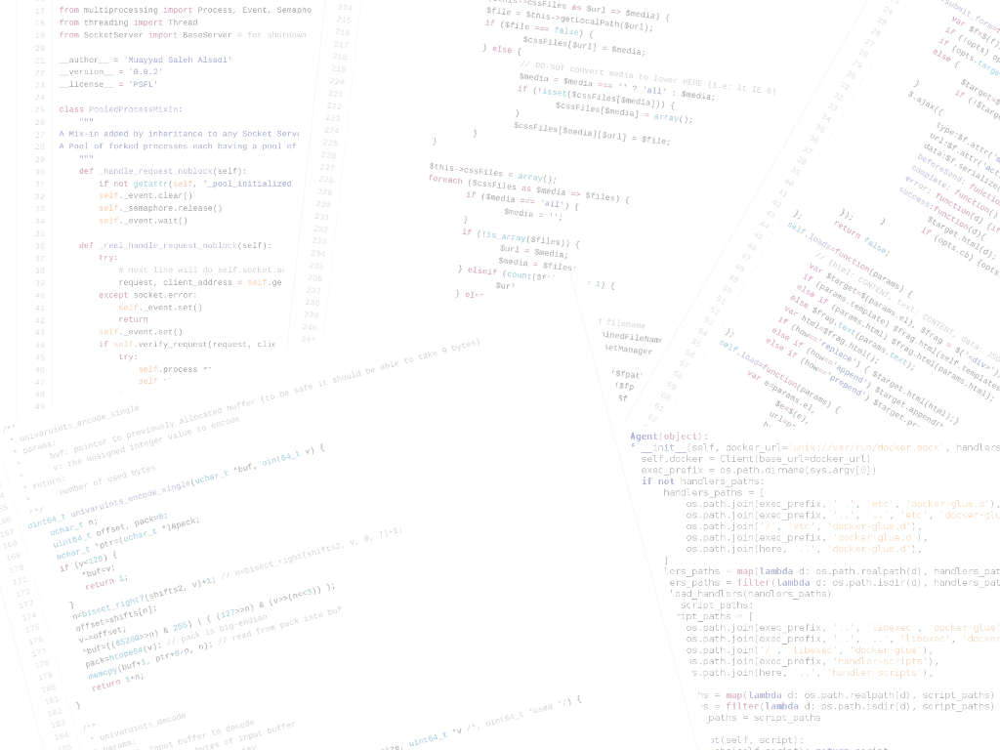
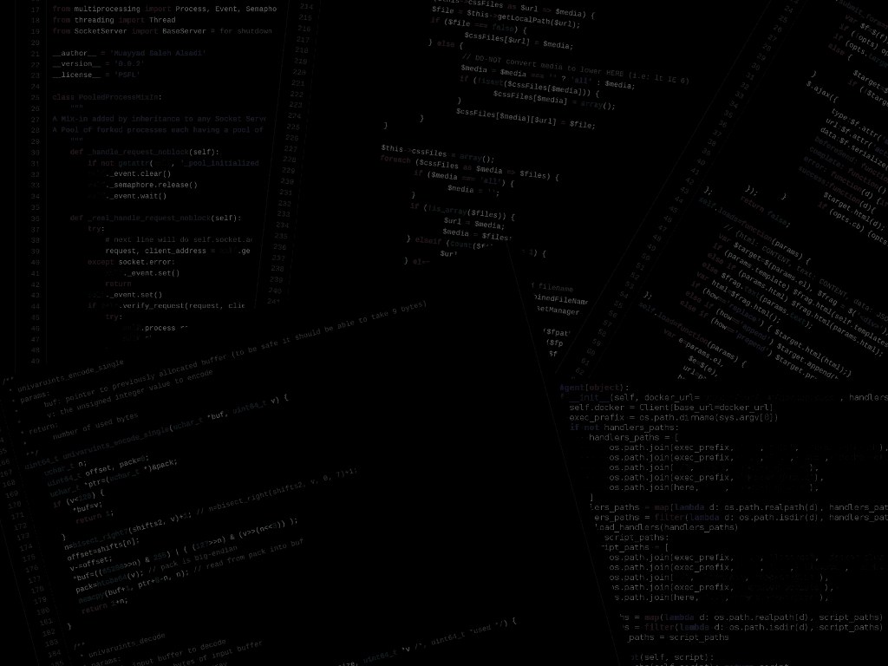
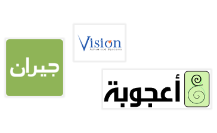

All kinds of Technologies
You name it: C/C++, Python, Nodejs, PHP, Ruby, Java and lately Go! All kinds of fields and technologies. From super-powered clusters to least-powered Arduino. From Web to backend. From CSS to Algorithms.


Profound experience with awesome people
I've worked with innovating companies, products and teams that put me in the right chellange.

Beyond ridding on Buzzword waves.
I'm a certified OpenStack administrator. I've used cloud in production including almost all Amazon AWS services and other vendors. I managed to elevate emerging technologies like Docker to make it suitable for production by getting involved in the community and creating solutions for the caveats.